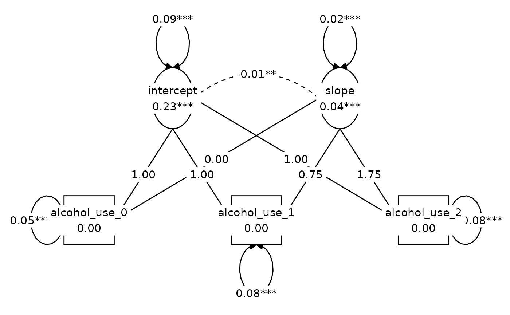
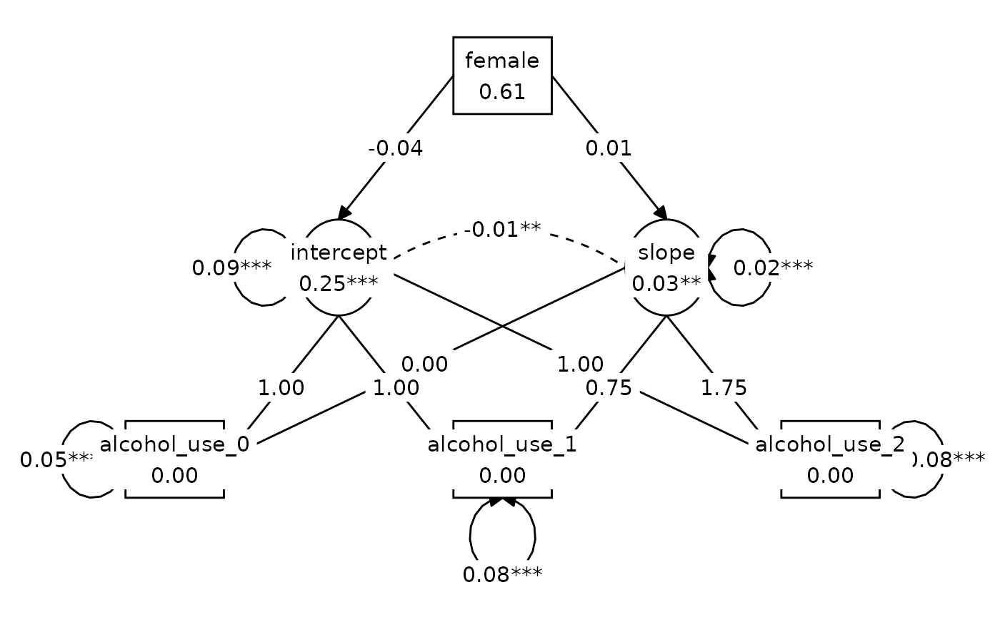
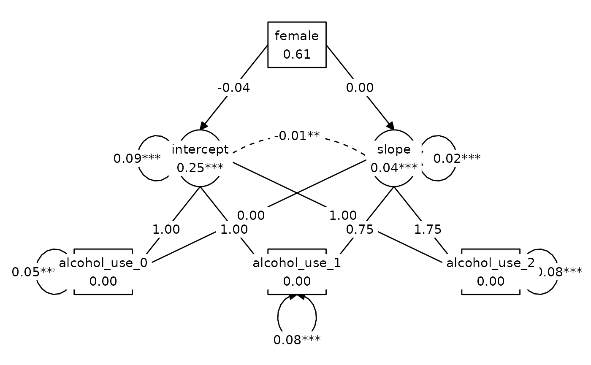
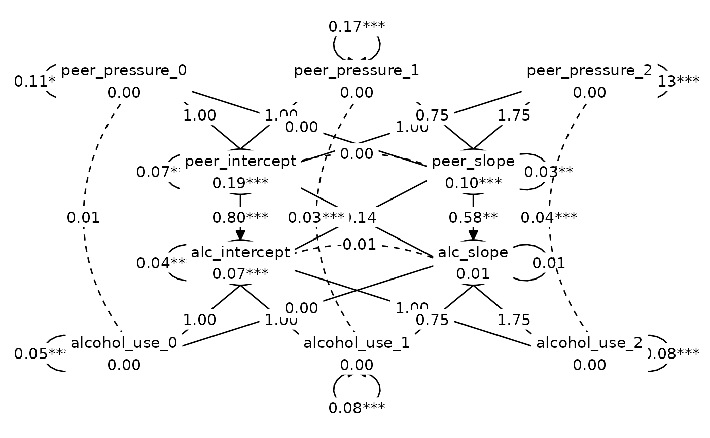

Chapter 8: Modeling change using covariance structure analysis
Source:vignettes/articles/chapter-8.Rmd
chapter-8.RmdThis chapter is under construction.
library(alda)
library(dplyr)
#>
#> Attaching package: 'dplyr'
#> The following objects are masked from 'package:stats':
#>
#> filter, lag
#> The following objects are masked from 'package:base':
#>
#> intersect, setdiff, setequal, union
library(tidyr)
library(lavaan)
#> This is lavaan 0.6-17
#> lavaan is FREE software! Please report any bugs.
library(tidySEM)
#> Loading required package: OpenMx
#> To take full advantage of multiple cores, use:
#> mxOption(key='Number of Threads', value=parallel::detectCores()) #now
#> Sys.setenv(OMP_NUM_THREADS=parallel::detectCores()) #before library(OpenMx)
#> Registered S3 method overwritten by 'tidySEM':
#> method from
#> predict.MxModel OpenMxNote: Covariance Structure Analysis is just another name for structural equation modelling (SEM).
8.2 The Basics of Latent Growth Modeling
Table 8.1, page 282:
alcohol_use_2_wide <- alcohol_use_2 |>
pivot_wider(names_from = time, values_from = c(alcohol_use, peer_pressure))
alcohol_use_2_wide
#> # A tibble: 1,122 × 8
#> id female alcohol_use_0 alcohol_use_1 alcohol_use_2 peer_pressure_0
#> <fct> <dbl> <dbl> <dbl> <dbl> <dbl>
#> 1 1 0 0.693 0.288 0.511 0
#> 2 2 0 0 0 0 0
#> 3 3 0 0 0 0 0
#> 4 4 0 0 0.511 0.511 1.10
#> 5 5 0 0.288 0 0.847 0
#> 6 6 0 0 0 0 0
#> 7 7 0 0.288 0.288 0 0
#> 8 8 0 0 0 0 0
#> 9 9 0 0 0.511 0 0
#> 10 10 0 0.511 0.693 1.30 0
#> # ℹ 1,112 more rows
#> # ℹ 2 more variables: peer_pressure_1 <dbl>, peer_pressure_2 <dbl>
# Means
alcohol_use_2_wide |>
summarise(across(female:peer_pressure_2, mean)) |>
glimpse()
#> Rows: 1
#> Columns: 7
#> $ female <dbl> 0.6122995
#> $ alcohol_use_0 <dbl> 0.2250666
#> $ alcohol_use_1 <dbl> 0.2541351
#> $ alcohol_use_2 <dbl> 0.287923
#> $ peer_pressure_0 <dbl> 0.1771944
#> $ peer_pressure_1 <dbl> 0.2904569
#> $ peer_pressure_2 <dbl> 0.3470381
# Covariances
cov(select(alcohol_use_2_wide, -c(id, female)))
#> alcohol_use_0 alcohol_use_1 alcohol_use_2 peer_pressure_0
#> alcohol_use_0 0.13558718 0.07775260 0.06526470 0.06586967
#> alcohol_use_1 0.07775260 0.15528121 0.08186386 0.04479710
#> alcohol_use_2 0.06526470 0.08186386 0.18075945 0.03988182
#> peer_pressure_0 0.06586967 0.04479710 0.03988182 0.17399159
#> peer_pressure_1 0.06404875 0.09647876 0.06580980 0.07158186
#> peer_pressure_2 0.06008199 0.07433086 0.13197010 0.07071309
#> peer_pressure_1 peer_pressure_2
#> alcohol_use_0 0.06404875 0.06008199
#> alcohol_use_1 0.09647876 0.07433086
#> alcohol_use_2 0.06580980 0.13197010
#> peer_pressure_0 0.07158186 0.07071309
#> peer_pressure_1 0.26190160 0.11180554
#> peer_pressure_2 0.11180554 0.28901177Table 8.2, page 289, Model A:
# Model A: Unconditional model
model_A <- ("
# Intercept and slope with fixed coefficients
intercept =~ 1*alcohol_use_0 + 1*alcohol_use_1 + 1*alcohol_use_2
slope =~ 0*alcohol_use_0 + .75*alcohol_use_1 + 1.75*alcohol_use_2
")
model_A_fit <- growth(
model_A, data = alcohol_use_2_wide, estimator = "ml", mimic = "Mplus"
)
summary(model_A_fit)
#> lavaan 0.6.17 ended normally after 32 iterations
#>
#> Estimator ML
#> Optimization method NLMINB
#> Number of model parameters 8
#>
#> Number of observations 1122
#> Number of missing patterns 1
#>
#> Model Test User Model:
#>
#> Test statistic 0.048
#> Degrees of freedom 1
#> P-value (Chi-square) 0.826
#>
#> Parameter Estimates:
#>
#> Standard errors Standard
#> Information Observed
#> Observed information based on Hessian
#>
#> Latent Variables:
#> Estimate Std.Err z-value P(>|z|)
#> intercept =~
#> alcohol_use_0 1.000
#> alcohol_use_1 1.000
#> alcohol_use_2 1.000
#> slope =~
#> alcohol_use_0 0.000
#> alcohol_use_1 0.750
#> alcohol_use_2 1.750
#>
#> Covariances:
#> Estimate Std.Err z-value P(>|z|)
#> intercept ~~
#> slope -0.012 0.005 -2.727 0.006
#>
#> Intercepts:
#> Estimate Std.Err z-value P(>|z|)
#> intercept 0.226 0.011 21.106 0.000
#> slope 0.036 0.007 4.898 0.000
#>
#> Variances:
#> Estimate Std.Err z-value P(>|z|)
#> .alcohol_use_0 0.048 0.006 7.550 0.000
#> .alcohol_use_1 0.076 0.004 17.051 0.000
#> .alcohol_use_2 0.077 0.010 7.756 0.000
#> intercept 0.087 0.007 12.253 0.000
#> slope 0.020 0.005 3.795 0.000
fitMeasures(model_A_fit, c("chisq", "df", "pvalue", "cfi", "rmsea"))
#> chisq df pvalue cfi rmsea
#> 0.048 1.000 0.826 1.000 0.000Figure 8.2, Model A:
lay <- get_layout(
NA, "intercept", NA, "slope", NA,
"alcohol_use_0", NA, "alcohol_use_1", NA, "alcohol_use_2",
rows = 2
)
graph_sem(model_A_fit, layout = lay)
Table 8.2, page 289, Model B:
# Model B: Adding female as a time-invariant predictor
model_B <- ("
# Intercept and slope with fixed coefficients
intercept =~ 1*alcohol_use_0 + 1*alcohol_use_1 + 1*alcohol_use_2
slope =~ 0*alcohol_use_0 + .75*alcohol_use_1 + 1.75*alcohol_use_2
# Regressions
intercept ~ female
slope ~ female
")
model_B_fit <- growth(
model_B, data = alcohol_use_2_wide, estimator = "ml", mimic = "Mplus"
)
summary(model_B_fit)
#> lavaan 0.6.17 ended normally after 33 iterations
#>
#> Estimator ML
#> Optimization method NLMINB
#> Number of model parameters 10
#>
#> Number of observations 1122
#> Number of missing patterns 1
#>
#> Model Test User Model:
#>
#> Test statistic 1.545
#> Degrees of freedom 2
#> P-value (Chi-square) 0.462
#>
#> Parameter Estimates:
#>
#> Standard errors Standard
#> Information Observed
#> Observed information based on Hessian
#>
#> Latent Variables:
#> Estimate Std.Err z-value P(>|z|)
#> intercept =~
#> alcohol_use_0 1.000
#> alcohol_use_1 1.000
#> alcohol_use_2 1.000
#> slope =~
#> alcohol_use_0 0.000
#> alcohol_use_1 0.750
#> alcohol_use_2 1.750
#>
#> Regressions:
#> Estimate Std.Err z-value P(>|z|)
#> intercept ~
#> female -0.042 0.022 -1.912 0.056
#> slope ~
#> female 0.008 0.015 0.522 0.602
#>
#> Covariances:
#> Estimate Std.Err z-value P(>|z|)
#> .intercept ~~
#> .slope -0.012 0.005 -2.661 0.008
#>
#> Intercepts:
#> Estimate Std.Err z-value P(>|z|)
#> .intercept 0.251 0.017 14.653 0.000
#> .slope 0.031 0.012 2.640 0.008
#>
#> Variances:
#> Estimate Std.Err z-value P(>|z|)
#> .alcohol_use_0 0.049 0.006 7.616 0.000
#> .alcohol_use_1 0.075 0.004 17.036 0.000
#> .alcohol_use_2 0.077 0.010 7.789 0.000
#> .intercept 0.086 0.007 12.191 0.000
#> .slope 0.019 0.005 3.740 0.000
fitMeasures(model_B_fit, c("chisq", "df", "pvalue", "cfi", "rmsea"))
#> chisq df pvalue cfi rmsea
#> 1.545 2.000 0.462 1.000 0.000Comparison with baseline model for Model B:
# Baseline for Model B (not shown in table)
model_B_baseline <- ("
# Intercept and slope with fixed coefficients
intercept =~ 1*alcohol_use_0 + 1*alcohol_use_1 + 1*alcohol_use_2
slope =~ 0*alcohol_use_0 + .75*alcohol_use_1 + 1.75*alcohol_use_2
# Regressions
intercept ~ 0*female
slope ~ 0*female
alcohol_use_0 ~ 0*1
alcohol_use_1 ~ 0*1
alcohol_use_2 ~ 0*1
")
model_B_baseline_fit <- growth(
model_B_baseline, data = alcohol_use_2_wide, estimator = "ml", mimic = "Mplus"
)
anova(model_B_baseline_fit, model_B_fit)
#>
#> Chi-Squared Difference Test
#>
#> Df AIC BIC Chisq Chisq diff RMSEA Df diff
#> model_B_fit 2 2577.9 2628.1 1.5447
#> model_B_baseline_fit 4 2577.7 2617.9 5.3665 3.8218 0.028493 2
#> Pr(>Chisq)
#> model_B_fit
#> model_B_baseline_fit 0.1479Figure 8.2, Model B:
lay <- get_layout(
NA, NA, "female", NA, NA,
NA, "intercept", NA, "slope", NA,
"alcohol_use_0", NA, "alcohol_use_1", NA, "alcohol_use_2",
rows = 3
)
graph_sem(model_B_fit, layout = lay)
Table 8.2, page 289, Model C:
# Model C: Model B but with slope fixed to zero
model_C <- ("
# Intercept and slope with fixed coefficients
intercept =~ 1*alcohol_use_0 + 1*alcohol_use_1 + 1*alcohol_use_2
slope =~ 0*alcohol_use_0 + .75*alcohol_use_1 + 1.75*alcohol_use_2
# Regressions
intercept ~ female
slope ~ 0*female
")
model_C_fit <- growth(
model_C, data = alcohol_use_2_wide, estimator = "ml", mimic = "Mplus"
)
summary(model_C_fit)
#> lavaan 0.6.17 ended normally after 32 iterations
#>
#> Estimator ML
#> Optimization method NLMINB
#> Number of model parameters 9
#>
#> Number of observations 1122
#> Number of missing patterns 1
#>
#> Model Test User Model:
#>
#> Test statistic 1.817
#> Degrees of freedom 3
#> P-value (Chi-square) 0.611
#>
#> Parameter Estimates:
#>
#> Standard errors Standard
#> Information Observed
#> Observed information based on Hessian
#>
#> Latent Variables:
#> Estimate Std.Err z-value P(>|z|)
#> intercept =~
#> alcohol_use_0 1.000
#> alcohol_use_1 1.000
#> alcohol_use_2 1.000
#> slope =~
#> alcohol_use_0 0.000
#> alcohol_use_1 0.750
#> alcohol_use_2 1.750
#>
#> Regressions:
#> Estimate Std.Err z-value P(>|z|)
#> intercept ~
#> female -0.037 0.019 -1.885 0.059
#> slope ~
#> female 0.000
#>
#> Covariances:
#> Estimate Std.Err z-value P(>|z|)
#> .intercept ~~
#> .slope -0.012 0.005 -2.667 0.008
#>
#> Intercepts:
#> Estimate Std.Err z-value P(>|z|)
#> .intercept 0.248 0.016 15.525 0.000
#> .slope 0.036 0.007 4.898 0.000
#>
#> Variances:
#> Estimate Std.Err z-value P(>|z|)
#> .alcohol_use_0 0.049 0.006 7.609 0.000
#> .alcohol_use_1 0.075 0.004 17.036 0.000
#> .alcohol_use_2 0.077 0.010 7.801 0.000
#> .intercept 0.086 0.007 12.194 0.000
#> .slope 0.019 0.005 3.739 0.000
fitMeasures(model_C_fit, c("chisq", "df", "pvalue", "cfi", "rmsea"))
#> chisq df pvalue cfi rmsea
#> 1.817 3.000 0.611 1.000 0.000Figure 8.2, Model C (same as Model B but with
slope ~ 0*female):
graph_sem(model_C_fit, layout = lay)
Table 8.2, page 289, Model D:
# Model D: Adding peer_pressure as a time-varying predictor
model_D <- ("
# Intercept and slope with fixed coefficients
alc_intercept =~ 1*alcohol_use_0 + 1*alcohol_use_1 + 1*alcohol_use_2
alc_slope =~ 0*alcohol_use_0 + .75*alcohol_use_1 + 1.75*alcohol_use_2
peer_intercept =~ 1*peer_pressure_0 + 1*peer_pressure_1 + 1*peer_pressure_2
peer_slope =~ 0*peer_pressure_0 + .75*peer_pressure_1 + 1.75*peer_pressure_2
# Regressions
alc_intercept ~ start(.8)*peer_intercept + start(.08)*peer_slope
alc_slope ~ start(-.1)*peer_intercept + start(.6)*peer_slope
# Time-varying covariances
alcohol_use_0 ~~ peer_pressure_0
alcohol_use_1 ~~ peer_pressure_1
alcohol_use_2 ~~ peer_pressure_2
# Fix intercepts to zero
alcohol_use_0 ~ 0*1
alcohol_use_1 ~ 0*1
alcohol_use_2 ~ 0*1
peer_pressure_0 ~ 0*1
peer_pressure_1 ~ 0*1
peer_pressure_2 ~ 0*1
")
model_D_fit <- growth(
model_D, data = alcohol_use_2_wide, estimator = "ml", mimic = "Mplus"
)
summary(model_D_fit)
#> lavaan 0.6.17 ended normally after 72 iterations
#>
#> Estimator ML
#> Optimization method NLMINB
#> Number of model parameters 23
#>
#> Number of observations 1122
#> Number of missing patterns 1
#>
#> Model Test User Model:
#>
#> Test statistic 11.557
#> Degrees of freedom 4
#> P-value (Chi-square) 0.021
#>
#> Parameter Estimates:
#>
#> Standard errors Standard
#> Information Observed
#> Observed information based on Hessian
#>
#> Latent Variables:
#> Estimate Std.Err z-value P(>|z|)
#> alc_intercept =~
#> alcohol_use_0 1.000
#> alcohol_use_1 1.000
#> alcohol_use_2 1.000
#> alc_slope =~
#> alcohol_use_0 0.000
#> alcohol_use_1 0.750
#> alcohol_use_2 1.750
#> peer_intercept =~
#> peer_pressur_0 1.000
#> peer_pressur_1 1.000
#> peer_pressur_2 1.000
#> peer_slope =~
#> peer_pressur_0 0.000
#> peer_pressur_1 0.750
#> peer_pressur_2 1.750
#>
#> Regressions:
#> Estimate Std.Err z-value P(>|z|)
#> alc_intercept ~
#> peer_intercept 0.799 0.103 7.781 0.000
#> peer_slope 0.080 0.184 0.438 0.661
#> alc_slope ~
#> peer_intercept -0.143 0.076 -1.884 0.060
#> peer_slope 0.577 0.193 2.990 0.003
#>
#> Covariances:
#> Estimate Std.Err z-value P(>|z|)
#> .alcohol_use_0 ~~
#> .peer_pressur_0 0.011 0.006 1.773 0.076
#> .alcohol_use_1 ~~
#> .peer_pressur_1 0.034 0.005 7.324 0.000
#> .alcohol_use_2 ~~
#> .peer_pressur_2 0.037 0.010 3.663 0.000
#> peer_intercept ~~
#> peer_slope 0.001 0.007 0.166 0.868
#> .alc_intercept ~~
#> .alc_slope -0.006 0.005 -1.249 0.212
#>
#> Intercepts:
#> Estimate Std.Err z-value P(>|z|)
#> .alcohol_use_0 0.000
#> .alcohol_use_1 0.000
#> .alcohol_use_2 0.000
#> .peer_pressur_0 0.000
#> .peer_pressur_1 0.000
#> .peer_pressur_2 0.000
#> .alc_intercept 0.067 0.016 4.252 0.000
#> .alc_slope 0.008 0.015 0.564 0.573
#> peer_intercept 0.188 0.012 15.743 0.000
#> peer_slope 0.096 0.010 9.922 0.000
#>
#> Variances:
#> Estimate Std.Err z-value P(>|z|)
#> .alcohol_use_0 0.048 0.006 7.553 0.000
#> .alcohol_use_1 0.076 0.004 17.165 0.000
#> .alcohol_use_2 0.076 0.010 7.819 0.000
#> .peer_pressur_0 0.106 0.011 9.790 0.000
#> .peer_pressur_1 0.171 0.009 19.713 0.000
#> .peer_pressur_2 0.129 0.018 7.325 0.000
#> .alc_intercept 0.042 0.007 5.649 0.000
#> .alc_slope 0.009 0.005 1.697 0.090
#> peer_intercept 0.070 0.010 6.729 0.000
#> peer_slope 0.028 0.009 3.214 0.001
fitMeasures(model_D_fit, c("chisq", "df", "pvalue", "cfi", "rmsea"))
#> chisq df pvalue cfi rmsea
#> 11.557 4.000 0.021 0.996 0.041Comparison with baseline model for Model D:
# Baseline for Model D (not shown in table)
model_D_baseline <- ("
# Intercepts and slopes with fixed coefficients
alc_intercept =~ 1*alcohol_use_0 + 1*alcohol_use_1 + 1*alcohol_use_2
alc_slope =~ 0*alcohol_use_0 + .75*alcohol_use_1 + 1.75*alcohol_use_2
peer_intercept =~ 1*peer_pressure_0 + 1*peer_pressure_1 + 1*peer_pressure_2
peer_slope =~ 0*peer_pressure_0 + .75*peer_pressure_1 + 1.75*peer_pressure_2
# Regressions
alc_intercept ~ 0*peer_intercept + 0*peer_slope
alc_slope ~ 0*peer_intercept + 0*peer_slope
# Time-varying covariances
alcohol_use_0 ~~ peer_pressure_0
alcohol_use_1 ~~ peer_pressure_1
alcohol_use_2 ~~ peer_pressure_2
alcohol_use_0 ~ 0*1
alcohol_use_1 ~ 0*1
alcohol_use_2 ~ 0*1
peer_pressure_0 ~ 0*1
peer_pressure_1 ~ 0*1
peer_pressure_2 ~ 0*1
")
model_D_baseline_fit <- growth(
model_D_baseline, data = alcohol_use_2_wide, estimator = "ml", mimic = "Mplus"
)
anova(model_D_baseline_fit, model_D_fit)
#>
#> Chi-Squared Difference Test
#>
#> Df AIC BIC Chisq Chisq diff RMSEA Df diff
#> model_D_fit 4 6120.5 6236.1 11.557
#> model_D_baseline_fit 8 6443.6 6539.1 342.648 331.09 0.26997 4
#> Pr(>Chisq)
#> model_D_fit
#> model_D_baseline_fit < 2.2e-16 ***
#> ---
#> Signif. codes: 0 '***' 0.001 '**' 0.01 '*' 0.05 '.' 0.1 ' ' 1Figure 8.2, Model D:
lay <- get_layout(
"peer_pressure_0", NA, "peer_pressure_1", NA, "peer_pressure_2",
NA, "peer_intercept", NA, "peer_slope", NA,
NA, "alc_intercept", NA, "alc_slope", NA,
"alcohol_use_0", NA, "alcohol_use_1", NA, "alcohol_use_2",
rows = 4
)
graph_sem(model_D_fit, layout = lay)